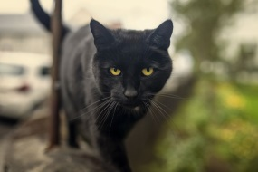
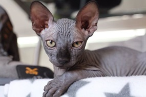
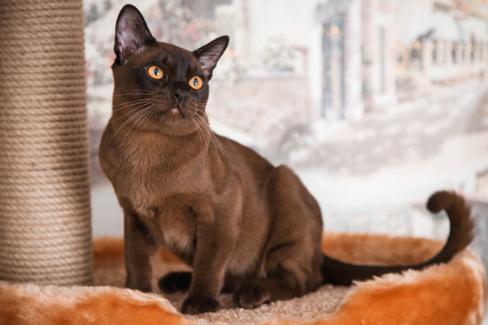
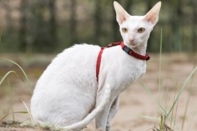
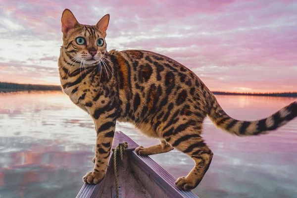
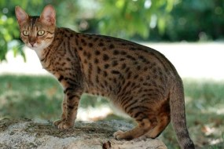
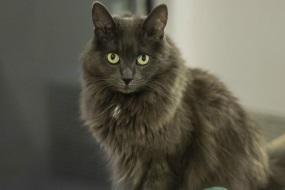

Как выбрать породу кошки
Выбор породы — сложный вопрос для будущего владельца.
Неопытному человеку сложно разобраться в таком количестве пород кошек. Разными фелинологическими клубами признано от 40 до 90 пород.
Мы составили руководство по выбору породы кошки, чтобы помочь будущим хозяевам. Породы распределены по особенностям характера, ухода и образу жизни владельца кошки.
- По сложности в уходе
- Выбор по характеру
По сложности в уходе
Любая кошка требует ухода, однако некоторые породы требуют большего или меньшего внимания. Сложность в содержании может как угнетать, так и радовать — учитывайте ваши желания и возможности.
Кошки, не требующие специального ухода
Если вы не желаете проводить вечера за вычесыванием шерсти или обдумыванием меню своего любимчика, обратите внимание на следующие породы:
-

Абиссинская кошка
Короткая шерстка и редкая линька
-

Бомбейская кошка
Кошка для любителей черной одежды
Это сокращенный список, однако самые простые в уходе кошки — короткошерстные без причуд во внешности.
Длинношерстные кошки часто линяют и требуют тщательного ухода за шерсткой, а бесшерстные — мерзнут и потеют. Питомцы с короткой шерстью — отличный выбор для занятого хозяина.
Сложные в содержании породы
Вы — страстный любитель котиков и готовы посвятить немалую долю времени заботе за любимцем? Тогда присмотритесь к таким породам:
-

Донской сфинкс
Зимой ни за что не слезит с батареи
-

Канадский сфинкс
В холод мерзнет, в жару потеет
Сфинксы — мерзнущие котики, желающие постоянного тепла и заботы. Персидская кошка сложна своей рекордной длиной шерсти, которая постоянно спутывается в колтуны. Кроме того, у персов плоская мордочка, из-за которой они могут часто болеть.
Непросто ухаживать за кошками с необычными ушками: шотландскими вислоухими или американскими кёрлами. Также к кошкам со сложным уходом можно причислить все длинношерстные породы.
По характеру
Порода кошки не гарантирует, что питомец будет иметь нужные черты характера. Однако случаи «нежелательного» характера у породистых кошек — исключение из правила.
Общительные и разговорчивые
Общаться со своей кошкой — приятное занятие, которое с радостью разделят с хозяином разговорчивые питомцы. Если вам хочется каждый день обсуждать с кошкой погоду, подойдут такие породы:
-

Бурманская кошка
Мурлыка, с которой интересно общаться
-

Сиамская кошка
Сопровождает своим "мяу" каждое действие
Общительные породы кошек души не чаят в философских разговорах с хозяином. Не выбирайте такую породу, если цените тишину в своем доме.
Молчаливые кошки
Мяуканье может и раздражать хозяина кошки. Если вы предпочитаете не слышать лишних звуков, выбирайте из этих пород:
-

Американская короткошерстная
Кот, которому лень мяукать
-

Корниш-рекс
Умеет общаться с хозяином без звуков
Молчаливые кошки не докучают, и вы сохраните спокойствие своего дома. Представители этих пород будут мяукать только по важному поводу.
Активные и энергичные
За деятельными кошками интересно наблюдать: сегодня питомцу захотелось исследовать шкаф, а завтра он станет космонавтом! Вот такие кошки любят активность:
-

Бенгальская кошка
Любознательный затейник
-

Египетская мау
Энергичная и умная
Хозяевам энергичных пород кошек придется постоянно придумывать, чем занять своего питомца. Но это того стоит! Они будут с удовольствием решать ваши головоломки и ждать следующих.
Кошки-лежебоки
Есть кошки, которым не нравится бегать по хозяйским полкам. Можно ведь хорошо покушать, а потом хорошо поспать! Следующие породы — настоящие ленивки:
-

Британская кошка
Любит покушать и поспать
-

Нибелунг
Кот, которому интересно лежать с хозяином
Ленивые породы кошек — хороший выбор для флегматичных людей. Кошки-лежебоки бывают настолько незаметными, что о существовании кота в доме намекает только регулярно пустеющая миска.